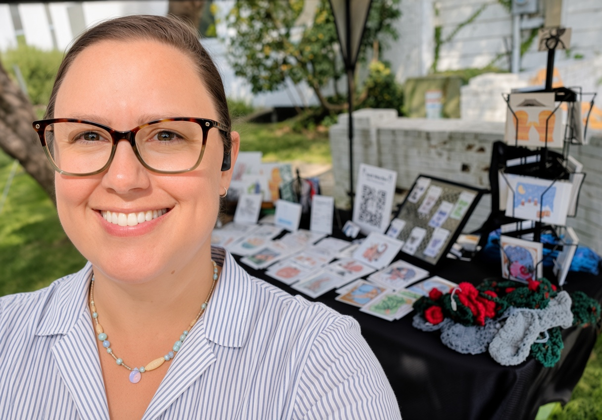
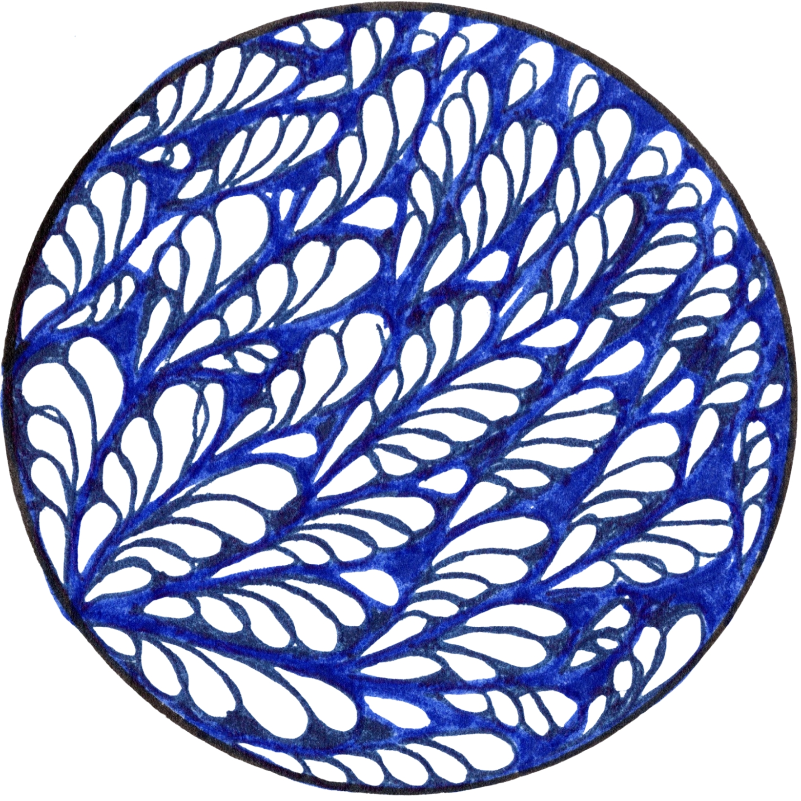

Hello I’m
Loretta Noble
Artist & Designer


Hello, I'm Loretta, the artist behind Small Wise One.
My artwork combines observation, storytelling, pattern, and imagination to celebrate nature, seasonal traditions, and everyday wonder.
With a background in design and a lifelong love of drawing, I create intricate hand-drawn illustrations that invite viewers to slow down, look closely, and discover new details.
Whether I'm inspired by botanical discoveries, wildlife, changing seasons, favorite traditions, or ordinary objects that deserve a second look, I aim to create artwork that sparks curiosity, connection, and joy.
I'm based in Ohio, where I continue to explore the natural world and the small moments of wonder that inspire my work.